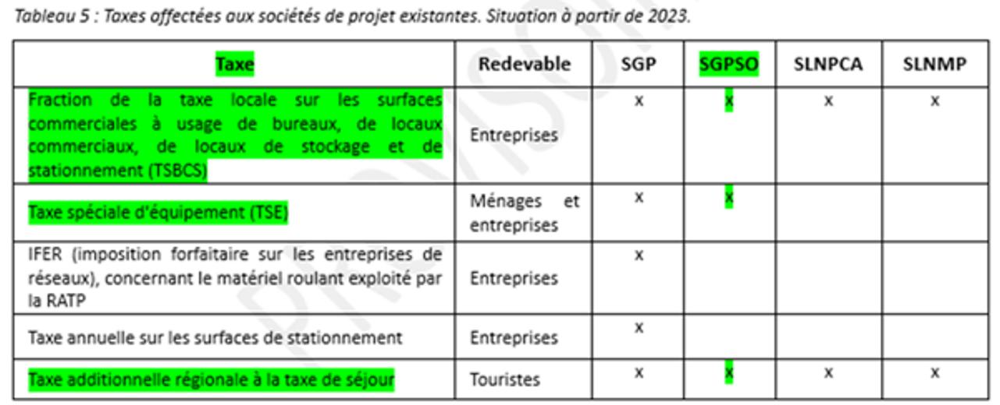

Qui paye ?
Ce qu'ils disent :
Voilà ce que les régions annoncent dans leur plaquette :
| Répartition des financements (sur l’enveloppe de 10,3 milliards) 40% Etat (4,1 milliards d’euros) 40 % collectivités (4,1 milliards d’euros) 20% de subventions de l’Union européenne |
Ce qu'ils ne disent pas.
Un oubli (?) par rapport au plan de financement présenté aux élus : les 20% de l’Europe sont une hypothèse.
- Europe (hypothèse) : 20%, soit 2,05 milliards d'euros courants
- État : 40%, soit 4,1 milliards d'euros courants
- Collectivités locales : 40%, soit 4,1 milliards d'euros courants, répartis selon le tableau qui suit
Les collectivités locales se sont engagées à financer :
- L'évolution des coûts du projet (article 2) ; - Les frais financiers et de gestion de la société de projet estimés à 10% du coût du projet (non budgétisé) ; - Le montant des subventions européennes si elles sont inférieures aux 20% attendus (article 5) ; - A la place des collectivités défaillantes ; - La suite du projet (Dax-Espagne) sans en connaître le coût réel (article 3)
Un engagement sur 40 ans !
Comme le souligne Gilles Savary dans son ouvrage La ville inaccessible :
« Les collectivités n’ont sûrement pas mesuré les risques qu’elles prenaient. En effet, ce qui distingue les sociétés de projet LGV de la SGP c’est qu’elles sont dépossédées de la maîtrise d’ouvrage au profit de SNCF Réseau dont elles acquitteront les factures à travers l’emprunt. Ainsi se trouvent-elles exposées aux fluctuations des taux d’intérêt sur 40 ans et aux aléas de l’économie et des trafics. Actuellement 60% des trafics TGV sont déficitaires selon la SNCF. Ultérieurement, elles devront s’impliquer dans la maintenance de la ligne, sans le moindre droit de propriété ni de recettes en contrepartie ! »
Sa conclusion est sans concession : « Ainsi les collectivités ont été entrainées par l’Etat sur un terrain « hasardeux » qui siphonnera leurs finances, pour des années, au détriment des investissements dans les transports du quotidien dont elles ont la charge.»
Le contribuable à la rescousse
Appelé à financer à travers l’impôt ce projet pharaonique, certains sont appelés à financer le projet à travers des taxes pour diminuer la charge des collectivités locales.
Source : Extrait du rapport du COI de décembre 2022 (p 122)
Deux ont été mises en place et sont effectives à partir de 2023 :
-
La TSE est exigible pendant 40 ans pour les propriétaires fonciers des communes situées à moins de soixante minutes en voiture d’une des gares desservies par la LGV. Prélèvement anecdotique disent les promoteurs du projet, tout comme l’étaient à leur création CSG et CRDS. En revanche, il n’a jamais été question que les Franciliens participent au financement des LGV.
Un comble pour Gilles Savary :
« Le GPSO engendre une inégalité devant l’impôt entre franciliens, utilisateurs majoritaires de l’infrastructure, et provinciaux, sans parler des Français lésés par le projet qui devront se reloger dans les environs et paieront l’impôt sur la LGV ! »
Une taxe additionnelle de 34 % à la taxe de séjour sera instaurée à compter du 1er janvier 2024, perçue pendant 40 ans dans quatre départements aquitains (33, 64,40 et 47) et 7 départements d’Occitanie (31, 32, 65, 09, 46, 81, 82) au bénéfice de la « Société du Grand Projet du Sud-Ouest ».
Nous sommes dans l’attente de nouvelles taxes et d’un nouveau « hold-up » dans le portefeuille des citoyens.